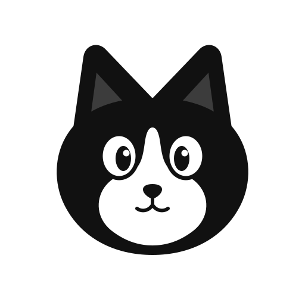
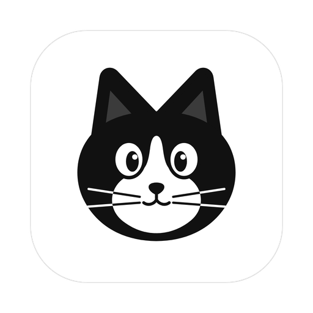

Pimpo
Ask in plain words. The first time, Pimpo does it with a language model while you watch. When it works, it turns the task into tested code that runs on its own, without a model: reliable, cheap, and safe by construction.
Free and open source (Apache 2.0). macOS, Windows, Linux, and servers. No telemetry.
A routine is code with tests, not a prompt read again every night. It does the same thing each time, and says so when it cannot.
Routines cost cents, not dollars. It works with the plans you already pay for (Claude Code, Codex, opencode), any API key, or local models.
Routines reach only the capabilities they declare. Every action passes your rules and is logged, and anything that cannot be undone waits for you.
It runs on your computer or your server and keeps your data there. Export everything to one encrypted file, whenever you want.
One agent that learns your tasks once and then does them on its own, safely, wherever you are.
Ask in plain words. Pimpo does it once with a model while you watch, then turns it into tested code that runs without one.
Dashboards of widgets, so you see what your routines found without reading a message.
Rules live outside the model, so a clever email cannot talk Pimpo out of them.
One agent across your computer, your phone and the apps you already talk in.
Your accounts and tools, and anything with an API, without waiting for an integration.
Use what you already pay for, or run everything on your own computer.
Each person has their own Pimpo inside the same one, and nobody sees anyone else's things.
It gets to know you, and only from what you told it.
Free and open source, and your data stays where you put it.
In the app, on Telegram or WhatsApp, or by voice: “every morning, send me my agenda and the emails that matter.”
A model does the task once, with every change rehearsed first, so you see exactly what it would do.
Pimpo writes a routine: readable JavaScript, tests from what it just saw, and the list of the only things it may touch. A held-out test must pass too.
On schedule, on a webhook or when something changes, with no model. If a service changes and it breaks, Pimpo tells you and repairs it.
Email, calendars, Google Sheets, Notion, Todoist, Obsidian, GitHub, Home Assistant, Apple Reminders and Notes, Spotify, news feeds, web search.
Any MCP server, any REST API with an OpenAPI description, or a JSON file describing its requests. No recompiling.
Desktop, web, phone, Telegram, WhatsApp, Slack, Discord, Signal, email, and voice, with local or cloud voices.
docker run -d --name pimpo -p 127.0.0.1:7788:7788 \
-v pimpo:/data ghcr.io/turbine-dev/pimpocurl -fsSL https://raw.githubusercontent.com/turbine-dev/pimpo/main/scripts/install.sh | shLinux, macOS and Raspberry Pi. Checksums are verified.